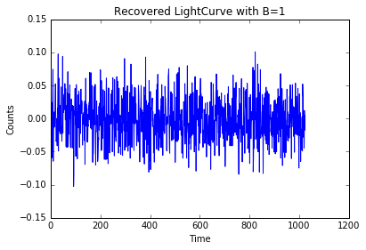
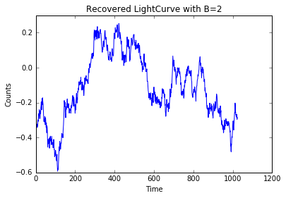

Simulating Light Curves from Power Law Power Spectra¶
In this notebook, we will show how to simulate a light curve from a power spectrum that follows a power law shape.
[1]:
import numpy as np
from matplotlib import pyplot as plt
%matplotlib inline
The power distribution is of the form S(w) = (1/w)^B. Define a function to recover time series from power law spectrum.
[21]:
def simulate(B):
N = 1024
# Define frequencies from 0 to 2*pi
w = np.linspace(0.001,2*np.pi,N)
# Draw two set of 'N' guassian distributed numbers
a1 = np.random.normal(size=N)
a2 = np.random.normal(size=N)
# Multiply by (1/w)^B to get real and imaginary parts
real = a1 * np.power((1/w),B/2)
imaginary = a2 * np.power((1/w),B/2)
# Form complex numbers corresponding to each frequency
f = [complex(r, i) for r,i in zip(real,imaginary)]
# Obtain real valued time series
f_conj = np.conjugate(np.array(f))
# Obtain time series
f_inv = np.fft.ifft(f_conj)
return f_inv
Start with B=1 to get a flicker noise distribution.
[22]:
f = simulate(1)
plt.plot(np.real(f))
plt.xlabel('Time')
plt.ylabel('Counts')
plt.title('Recovered LightCurve with B=1')
[22]:
<matplotlib.text.Text at 0xcbec4a8>

Try out with B=2 to get random walk distribution.
[23]:
f = simulate(2)
plt.plot(np.real(f))
plt.xlabel('Time')
plt.ylabel('Counts')
plt.title('Recovered LightCurve with B=2')
[23]:
<matplotlib.text.Text at 0xd188198>
